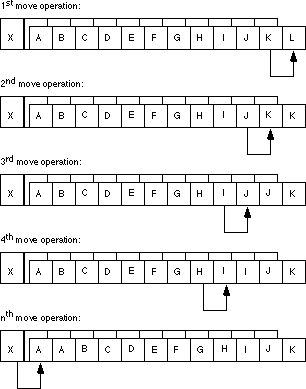
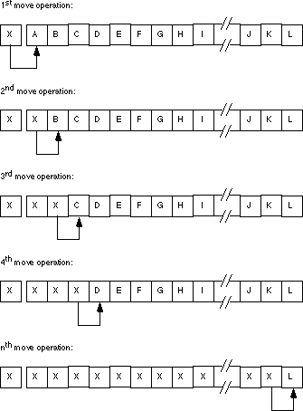

|
Table of Content | Chapter Fifteen (Part 3) |
|
Table of Content | Chapter Fifteen (Part 3) |
The movs instruction takes four basic forms. Movs
moves bytes, words, or double words, movsb moves byte strings, movsw
moves word strings, and movsd moves double word strings (on 80386 and
later processors). These four instructions use the following syntax:
{REP} MOVSB
{REP} MOVSW
{REP} MOVSD ;Available only on 80386+
{REP} MOVS Dest, Source
The movsb (move string, bytes) instruction
fetches the byte at address ds:si, stores it at address es:di,
and then increments or decrements the si and di registers by
one. If the rep prefix is present, the CPU checks cx to see if
it contains zero. If not, then it moves the byte from ds:si to es:di and
decrements the cx register. This process repeats until cx becomes
zero.
The movsw (move string, words) instruction
fetches the word at address ds:si, stores it at address es:di,
and then increments or decrements si and di by two. If there is
a rep prefix, then the CPU repeats this procedure as many times as specified
in cx.
The movsd instruction operates in a similar
fashion on double words. Incrementing or decrementing si and di by
four for each data movement.
MASM automatically figures out the size of the movs instruction
by looking at the size of the operands specified. If you've defined the two operands with
the byte (or comparable) directive, then MASM will emit a movsb instruction.
If you've declared the two labels via word (or comparable), MASM will
generate a movws instruction. If you've declared the two labels with dword,
MASM emits a movsd instruction. The assembler will also check the segments of
the two operands to ensure they match the current assumptions (via the assume directive)
about the es and ds registers. You should always use the movsb,
movsw, and movsd forms and forget about the movs form.
Although, in theory, the movs form appears to
be an elegant way to handle the move string instruction, in practice it creates more
trouble than it's worth. Furthermore, this form of the move string instruction implies
that movs has explicit operands, when, in fact, the si and di
registers implicitly specify the operands. For this reason, we'll always use the movsb,
movsw, or movsd instructions. When used with the rep prefix,
the movsb instruction will move the number of bytes specified in the cx
register. The following code segment copies 384 bytes from String1 to String2:
cld
lea si, String1
lea di, String2
mov cx, 384
rep movsb
.
.
.
String1 byte 384 dup (?)
String2 byte 384 dup (?)
This code, of course, assumes that String1 and
String2 are in the same segment and both the ds and es registers
point at this segment. If you substitute movws for movsb, then
the code above will move 384 words (768 bytes) rather than 384 bytes:
cld
lea si, String1
lea di, String2
mov cx, 384
rep movsw
.
.
.
String1 word 384 dup (?)
String2 word 384 dup (?)
Remember, the cx register contains the element
count, not the byte count. When using the movsw instruction, the CPU moves
the number of words specified in the cx register.
If you've set the direction flag before executing a movsb/movsw/movsd
instruction, the CPU decrements the si and di registers
after moving each string element. This means that the si and di registers
must point at the end of their respective strings before issuing a movsb, movsw, or
movsd instruction. For example,
std
lea si, String1+383
lea di, String2+383
mov cx, 384
rep movsb
.
.
.
String1 byte 384 dup (?)
String2 byte 384 dup (?)
Although there are times when processing a string from tail
to head is useful (see the cmps description in the next section), generally
you'll process strings in the forward direction since it's more straightforward to do so.
There is one class of string operations where being able to process strings in both
directions is absolutely mandatory: processing strings when the source and destination
blocks overlap. Consider what happens in the following code:
cld
lea si, String1
lea di, String2
mov cx, 384
rep movsb
.
.
.
String1 byte ?
String2 byte 384 dup (?)
This sequence of instructions treats String1
and String2 as a pair of 384 byte strings. However, the last 383 bytes in the
String1 array overlap the first 383 bytes in the String2 array.
Let's trace the operation of this code byte by byte.
When the CPU executes the movsb instruction,
it copies the byte at ds:si (String1) to the byte pointed at by es:di
(String2). Then it increments si and di, decrements cx
by one, and repeats this process. Now the si register points at String1+1
(which is the address of String2) and the di register points at
String2+1. The movsb instruction copies the byte pointed at by si
to the byte pointed at by di. However, this is the byte originally
copied from location String1. So the movsb instruction copies
the value originally in location String1 to both locations String2
and String2+1. Again, the CPU increments si and di,
decrements cx, and repeats this operation. Now the movsb instruction
copies the byte from location String1+2 (String2+1) to location String2+2.
But once again, this is the value that originally appeared in location String1.
Each repetition of the loop copies the next element in String1 to the next
available location in the String2 array. Pictorially, it looks something
like:

The end result is that X gets replicated
throughout the string. The move instruction copies the source operand into the memory
location which will become the source operand for the very next move operation, which
causes the replication.
If you really want to move one array into another when they overlap, you should move each element of the source string to the destination string starting at the end of the two strings as shown below:

Setting the direction flag and pointing si and
di at the end of the strings will allow you to (correctly) move one string to
another when the two strings overlap and the source string begins at a lower address than
the destination string. If the two strings overlap and the source string begins at a
higher address than the destination string, then clear the direction flag and point si
and di at the beginning of the two strings.
If the two strings do not overlap, then you can use either technique to move the strings around in memory. Generally, operating with the direction flag clear is the easiest, so that makes the most sense in this case.
You shouldn't use the movs instruction to fill
an array with a single byte, word, or double word value. Another string instruction, stos,
is much better suited for this purpose. However, for arrays whose elements are larger than
four bytes, you can use the movs instruction to initialize the entire array
to the content of the first element. See the questions for additional information.
The cmps instruction compares two strings. The
CPU compares the string referenced by es:di to the string pointed at by ds:si.
Cx contains the length of the two strings (when using the rep prefix).
Like the movs instruction, the MASM assembler allows several different forms
of this instruction:
{REPE} CMPSB
{REPE} CMPSW
{REPE} CMPSD ;Available only on 80386+
{REPE} CMPS dest, source
{REPNE} CMPSB
{REPNE} CMPSW
{REPNE} CMPSD ;Available only on 80386+
{REPNE} CMPS dest, source
Like the movs instruction, the operands
present in the operand field of the cmps instruction determine the size of
the operands. You specify the actual operand addresses in the si and di
registers.
Without a repeat prefix, the cmps instruction
subtracts the value at location es:di from the value at ds:si and
updates the flags. Other than updating the flags, the CPU doesn't use the difference
produced by this subtraction. After comparing the two locations, cmps increments
or decrements the si and di registers by one, two, or four (for cmpsb/cmpsw/cmpsd,
respectively). Cmps increments the si and di registers
if the direction flag is clear and decrements them otherwise.
Of course, you will not tap the real power of the cmps
instruction using it to compare single bytes or words in memory. This instruction
shines when you use it to compare whole strings. With cmps, you can compare
consecutive elements in a string until you find a match or until consecutive elements do
not match.
To compare two strings to see if they are equal or not equal, you must compare corresponding elements in a string until they don't match. Consider the following strings:
"String1"
"String1"
The only way to determine that these two strings are equal is to compare each character in the first string to the corresponding character in the second. After all, the second string could have been "String2" which definitely is not equal to "String1". Of course, once you encounter a character in the destination string which doesn't equal the corresponding character in the source string, the comparison can stop. You needn't compare any other characters in the two strings.
The repe prefix accomplishes this operation.
It will compare successive elements in a string as long as they are equal and cx is
greater than zero. We could compare the two strings above using the following 80x86
assembly language code:
; Assume both strings are in the same segment and ES and DS
; both point at this segment.
cld
lea si, AdrsString1
lea di, AdrsString2
mov cx, 7
repe cmpsb
After the execution of the cmpsb instruction,
you can test the flags using the standard conditional jump instructions. This lets you
check for equality, inequality, less than, greater than, etc.
Character strings are usually compared using lexicographical ordering. In lexicographical ordering, the least significant element of a string carries the most weight. This is in direct contrast to standard integer comparisons where the most significant portion of the number carries the most weight. Furthermore, the length of a string affects the comparison only if the two strings are identical up to the length of the shorter string. For example, "Zebra" is less than "Zebras", because it is the shorter of the two strings, however, "Zebra" is greater than "AAAAAAAAAAH!" even though it is shorter. Lexicographical comparisons compare corresponding elements until encountering a character which doesn't match, or until encountering the end of the shorter string. If a pair of corresponding characters do not match, then this algorithm compares the two strings based on that single character. If the two strings match up to the length of the shorter string, we must compare their length. The two strings are equal if and only if their lengths are equal and each corresponding pair of characters in the two strings is identical. Lexicographical ordering is the standard alphabetical ordering you've grown up with.
For character strings, use the cmps instruction
in the following manner:
cmpsb instruction to compare the
strings on a byte by byte basis. Even if the strings contain an even number of characters,
you cannot use the cmpsw instruction. It does not compare strings in
lexicographical order. cx register must be loaded with the length
of the smaller string. repe prefix. ds:si and es:di registers must
point at the very first character in the two strings you want to compare. After the execution of the cmps instruction,
if the two strings were equal, their lengths must be compared in order to finish the
comparison. The following code compares a couple of character strings:
lea si, source
lea di, dest
mov cx, lengthSource
mov ax, lengthDest
cmp cx, ax
ja NoSwap
xchg ax, cx
NoSwap: repe cmpsb
jne NotEqual
mov ax, lengthSource
cmp ax, lengthDest
NotEqual:
If you're using bytes to hold the string lengths, you should adjust this code appropriately.
You can also use the cmps instruction to
compare multi-word integer values (that is, extended precision integer values). Because of
the amount of setup required for a string comparison, this isn't practical for integer
values less than three or four words in length, but for large integer values, it's an
excellent way to compare such values. Unlike character strings, we cannot compare integer
strings using a lexicographical ordering. When comparing strings, we compare the
characters from the least significant byte to the most significant byte. When comparing
integers, we must compare the values from the most significant byte (or word/double word)
down to the least significant byte, word or double word. So, to compare two eight-word
(128-bit) integer values, use the following code on the 80286:
std
lea si, SourceInteger+14
lea di, DestInteger+14
mov cx, 8
repe cmpsw
This code compares the integers from their most significant
word down to the least significant word. The cmpsw instruction finishes when
the two values are unequal or upon decrementing cx to zero (implying that the
two values are equal). Once again, the flags provide the result of the comparison.
The repne prefix will instruct the cmps instruction
to compare successive string elements as long as they do not match. The 80x86 flags are of
little use after the execution of this instruction. Either the cx register is
zero (in which case the two strings are totally different), or it contains the number of
elements compared in the two strings until a match. While this form of the cmps instruction
isn't particularly useful for comparing strings, it is useful for locating the first pair
of matching items in a couple of byte or word arrays. In general, though, you'll rarely
use the repne prefix with cmps.
One last thing to keep in mind with using the cmps instruction
- the value in the cx register determines the number of elements to process,
not the number of bytes. Therefore, when using cmpsw, cx specifies
the number of words to compare. This, of course, is twice the number of bytes to compare.
The cmps instruction compares two strings
against one another. You cannot use it to search for a particular element within a string.
For example, you could not use the cmps instruction to quickly scan for a
zero throughout some other string. You can use the scas (scan string)
instruction for this task.
Unlike the movs and cmps instructions,
the scas instruction only requires a destination string (es:di)
rather than both a source and destination string. The source operand is the value in the al
(scasb), ax (scasw), or eax (scasd)
register.
The scas instruction, by itself, compares the
value in the accumulator (al, ax, or eax) against the value
pointed at by es:di and then increments (or decrements) di by
one, two, or four. The CPU sets the flags according to the result of the comparison. While
this might be useful on occasion, scas is a lot more useful when using the repe
and repne prefixes.
When the repe prefix (repeat while equal) is
present, scas scans the string searching for an element which does not match
the value in the accumulator. When using the repne prefix (repeat while not
equal), scas scans the string searching for the first string element which is
equal to the value in the accumulator.
You're probably wondering "why do these prefixes do
exactly the opposite of what they ought to do?" The paragraphs above haven't quite
phrased the operation of the scas instruction properly. When using the repe
prefix with scas, the 80x86 scans through the string while the value
in the accumulator is equal to the string operand. This is equivalent to searching through
the string for the first element which does not match the value in the accumulator. The scas
instruction with repne scans through the string while the accumulator
is not equal to the string operand. Of course, this form searches for the first value in
the string which matches the value in the accumulator register. The scas instruction
takes the following forms:
{REPE} SCASB
{REPE} SCASW
{REPE} SCASD ;Available only on 80386+
{REPE} SCAS dest
{REPNE} SCASB
{REPNE} SCASW
{REPNE} SCASD ;Available only on 80386+
{REPNE} SCAS dest
Like the cmps and movs instructions,
the value in the cx register specifies the number of elements to process, not
bytes, when using a repeat prefix.
The stos instruction stores the value in the
accumulator at the location specified by es:di. After storing the value, the
CPU increments or decrements di depending upon the state of the direction
flag. Although the stos instruction has many uses, its primary use is to
initialize arrays and strings to a constant value. For example, if you have a 256-byte
array you want to clear out with zeros, use the following code:
; Presumably, the ES register already points at the segment
; containing DestString
cld
lea di, DestString
mov cx, 128 ;256 bytes is 128 words.
xor ax, ax ;AX := 0
rep stosw
This code writes 128 words rather than 256 bytes because a
single stosw operation is faster than two stosb operations. On
an 80386 or later this code could have written 64 double words to accomplish the same
thing even faster.
The stos instruction takes four forms. They
are
{REP} STOSB
{REP} STOSW
{REP} STOSD
{REP} STOS dest
The stosb instruction stores the value in the al
register into the specified memory location(s), the stosw instruction
stores the ax register into the specified memory location(s) and the stosd
instruction stores eax into the specified location(s). The stos instruction
is either an stosb, stosw, or stosd instruction depending upon
the size of the specified operand.
Keep in mind that the stos instruction is
useful only for initializing a byte, word, or dword array to a constant value. If you need
to initialize an array to different values, you cannot use the stos instruction.
You can use movs in such a situation, see the exercises for additional
details.
The lods instruction is unique among the
string instructions. You will never use a repeat prefix with this instruction. The lods
instruction copies the byte or word pointed at by ds:si into the al,
ax, or eax register, after which it increments or decrements the si
register by one, two, or four. Repeating this instruction via the repeat prefix
would serve no purpose whatsoever since the accumulator register will be overwritten each
time the lods instruction repeats. At the end of the repeat operation, the
accumulator will contain the last value read from memory.
Instead, use the lods instruction to fetch
bytes (lodsb), words (lodsw), or double words (lodsd)
from memory for further processing. By using the stos instruction, you can
synthesize powerful string operations.
Like the stos instruction, the lods instruction
takes four forms:
{REP} LODSB
{REP} LODSW
{REP} LODSD ;Available only on 80386+
{REP} LODS dest
As mentioned earlier, you'll rarely, if ever, use the rep
prefixes with these instructions[3]. The 80x86 increments
or decrements si by one, two, or four depending on the direction flag and
whether you're using the lodsb, lodsw, or lodsd instruction.
15.1.9 Building Complex String Functions from LODS and STOS
The 80x86 supports only five different string instructions:
movs, cmps, scas, lods, and stos[4]. These certainly aren't the only string operations you'll ever
want to use. However, you can use the lods and stos instructions
to easily generate any particular string operation you like. For example, suppose you
wanted a string operation that converts all the upper case characters in a string to lower
case. You could use the following code:
; Presumably, ES and DS have been set up to point at the same
; segment, the one containing the string to convert.
lea si, String2Convert
mov di, si
mov cx, LengthOfString
Convert2Lower: lodsb ;Get next char in str.
cmp al, 'A' ;Is it upper case?
jb NotUpper
cmp al, 'Z'
ja NotUpper
or al, 20h ;Convert to lower case.
NotUpper: stosb ;Store into destination.
loop Convert2Lower
Assuming you're willing to waste 256 bytes for a table, this conversion operation can be sped up somewhat using the xlat instruction:
; Presumably, ES and DS have been set up to point at the same
; segment, the one containing the string to be converted.
cld
lea si, String2Convert
mov di, si
mov cx, LengthOfString
lea bx, ConversionTable
Convert2Lower: lodsb ;Get next char in str.
xlat ;Convert as appropriate.
stosb ;Store into destination.
loop Convert2Lower
The conversion table, of course, would contain the index into the table at each location except at offsets 41h..5Ah. At these locations the conversion table would contain the values 61h..7Ah (i.e., at indexes 'A'..'Z' the table would contain the codes for 'a'..'z').
Since the lods and stos instructions
use the accumulator as an intermediary, you can use any accumulator operation to quickly
manipulate string elements.
15.1.10 Prefixes and the String Instructions
The string instructions will accept segment prefixes, lock
prefixes, and repeat prefixes. In fact, you can specify all three types of
instruction prefixes should you so desire. However, due to a bug in the earlier 80x86
chips (pre-80386), you should never use more than a single prefix (repeat, lock, or
segment override) on a string instruction unless your code will only run on later
processors; a likely event these days. If you absolutely must use two or more prefixes and
need to run on an earlier processor, make sure you turn off the interrupts while executing
the string instruction.
[3] They appear here simply because they are allowed. They're not useful, but they are allowed.
[4] Not counting INS and OUTS which we're ignoring here.
|
Table of Content | Chapter Fifteen (Part 3) |
Chapter Fifteen: Strings And
Character Sets (Part 2)
28 SEP 1996